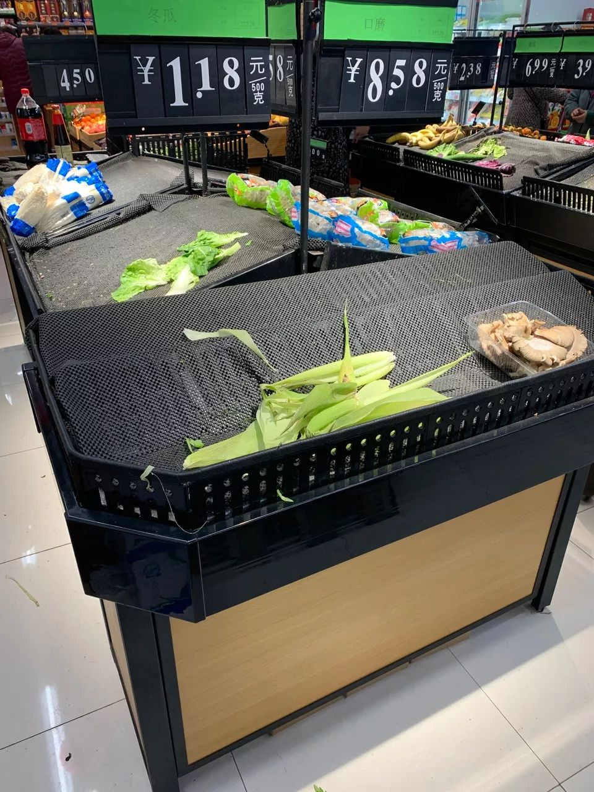
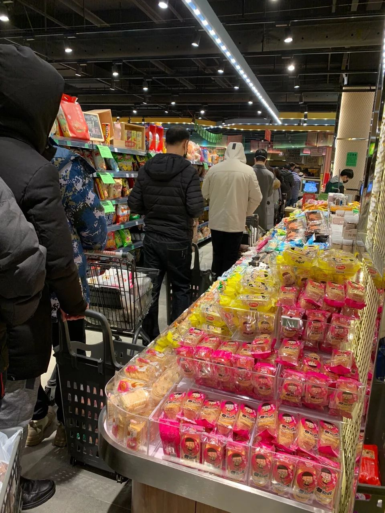
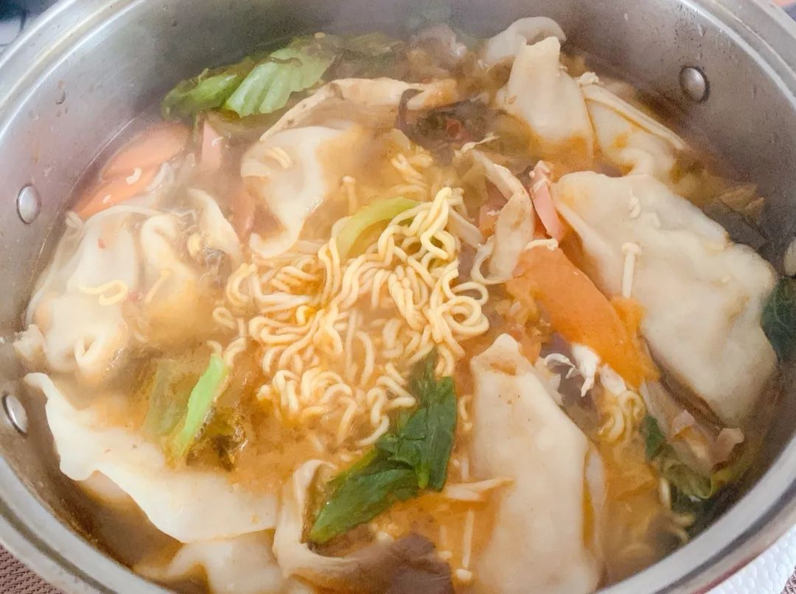
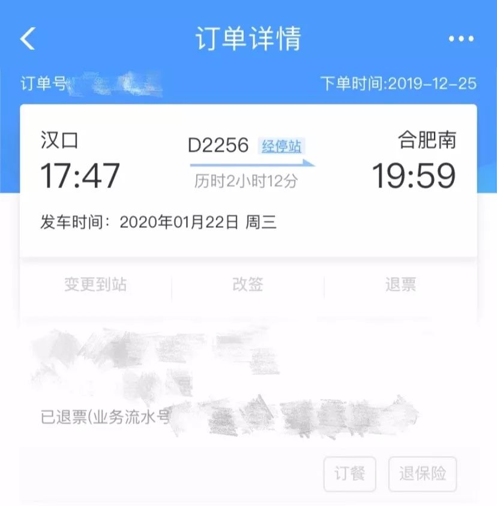
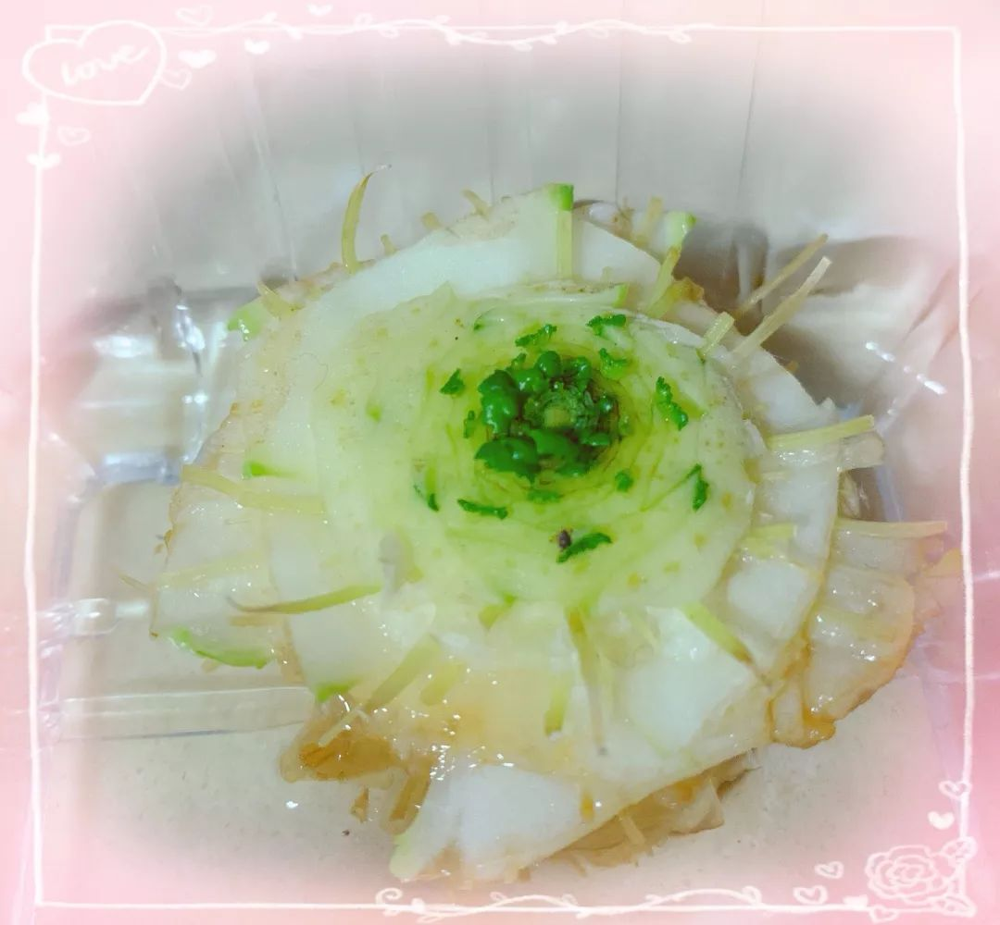
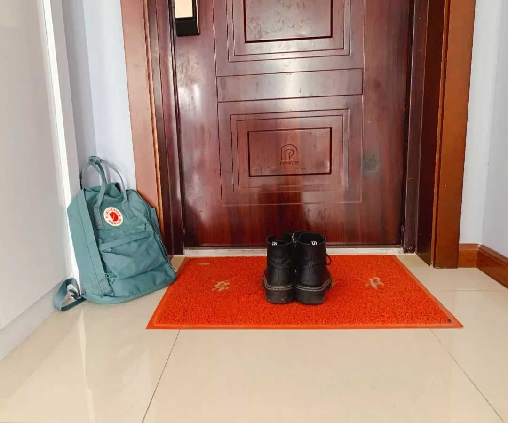
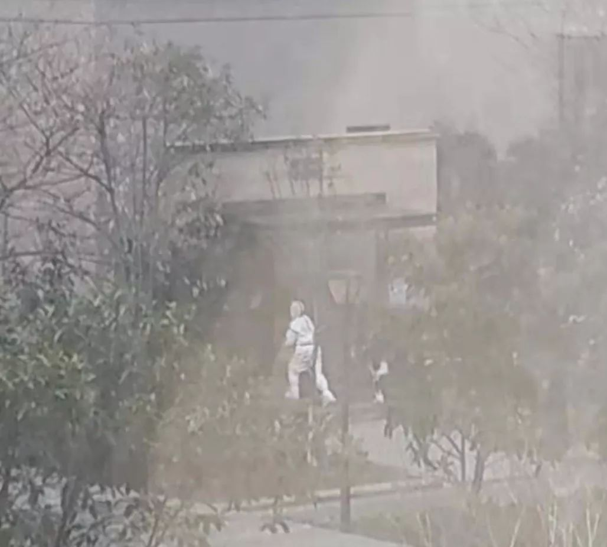
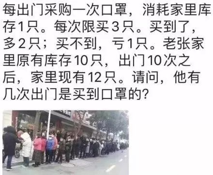
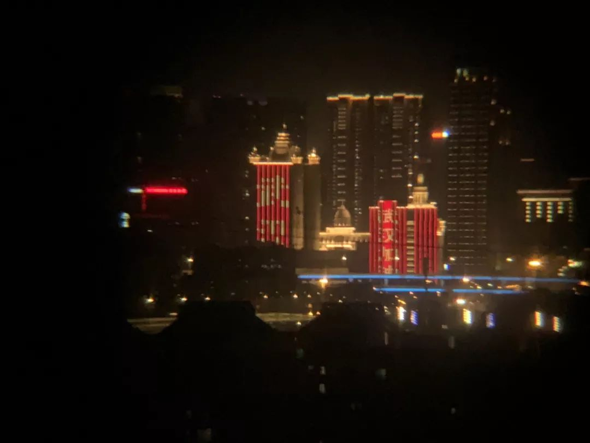

口述实录 | 如果没有这场疫情，这一天是我穿上秀禾服结婚的日子
原文链接 备份链接 妈妈总说我出嫁了他们一生的任务才算完成 口述/小梦（上海读研，定居上海） 我老家在湖北一个小县城。 9天前，亲友群里发来消息：武汉封城，小梦从上海回不来了，初六的婚不结了。 虽然年纪和小梦相差不大，但按辈分来说，她算是 …


小安，90后，从事法律行业，是一名在武汉的安徽人，截至2月1日，她已经独自一人在武汉自我隔离了10天，这10天里，她用文字和图片记录下了她的所听、所见、所感，她的怕和爱，她的惧和勇，她的沮丧和希望。
疫情之下，人类的悲欢和情感开始被打通，所以，这篇来自疫情中心武汉的“封城十日记”，也许多少能照见你我的内心。
这是央视新闻特别策划“疫情之下的生活切面”系列的第六篇稿子。
2020年1月23日
第一天
一觉醒来，“封城”了，看着这条新闻，不知不觉，眼睛有点酸。
朋友微信上催我去囤粮，我这才意识到问题的严重性，牙没刷、脸没洗，戴上口罩、眼镜和手套，飞奔向小区里的超市。
果真，社区的小超市空了，生鲜店因为过年关门了。

小区的超市空了
我有点蒙，忙拿出手机开始百度附近的大超市，那一刻，手竟然有点抖，“超市”两个字打了几遍都拼不对。
附近的大超市有点距离，可是马路上空荡荡的，没有公交，没有地铁，看不见出租车的影子，T3、曹操、滴滴（均为叫车软件）……全都是“附近无可用车辆”。我的手抖得更厉害了，终于忍不住，蹲在路边哭了。为什么会变成这样？前些日子不还好好的么？我都没回家，留在武汉了，为什么会这样呢？
蹲了会儿，脚有点酸，我在空旷的马路边狂奔。那个时候，来不及忧伤，只想赶紧去超市，屯粮！
新开的大超市位置有点偏，但是人超级多！货架不断被买空，又一直不断补货。没有想象中的混乱，一切井然有序，虽然很拥挤，但口罩背后，是一张张淡定的脸庞。
结账的队伍很长，后面的爹爹突然咳了几声，大家警觉地后退，爹爹戴着口罩，但声音依然洪亮：“莫怕莫怕，我吸烟，一年四季都这样。”即便如此，大家还是不约而同地保持了距离。

大超市里大家有秩序地排队结账
走出超市的时候，收银的小姐姐特别贴心地帮我把鸡蛋装好，一遍又一遍嘱咐我别压坏了；旁边的婆婆看我两手都提着袋子，帮我推开了门。东西很重，回家的路也很漫长，但心里还是暖暖的。
路过小区的超市，欣喜地看到店员在补货，新鲜的蔬菜已经到位，店长在门口大声喊着：“我们不休息，明天还开门，保证供应。”
武汉今年的冬天很冷，但此时还是觉得很温暖。虽然不时有不好的消息传来，但我坚信，天，终将放明。
我的城市生病了，我的城市依旧健康。

2020年1月24日
第二天
昨晚等湖北的数据等到凌晨2点，每天刷数据，好像成了我唯一可以做的事。
一觉醒来，才7点，打开手机，看到不断上升的数字，心里很难受，强迫自己再睡会儿，又辗转反侧到9点多，起来摸摸额头，好像一切正常，不放心还是量了下体温，36.4，长舒一口气。
一整天，我不知道该干啥。以前上班的时候，就想睡个懒觉，刷刷剧，或者在家捣鼓点好吃的，现在有了大把时间，却不知道该做什么。强迫自己不去看微博，不去看关于疫情的一切，可总是忍不住去刷，然后恐慌、难过、纠结。
下午的体温不是很稳定，一不小心测出个37.2，我慌了，不断地重新测量，开始胡思乱想：是之前去医院拔牙染上的么？是昨天咳嗽的爹爹传染给我了么？我要是真的染上了该怎么办？打120会有医生来接我么？去医院，没有交通工具要怎么去？我要是死了，我爸妈怎么办……
今天是大年三十，妈妈让我下厨整点好吃的犒劳自己。我什么事都没做，有什么好犒劳的，但话到嘴边，变成了“肯定的呀，一个人的年夜饭，也要丰盛精致”。

一个人的年夜饭：泡面饺子
没有心情看春晚，但那个临时加的朗诵让我再一次泪奔，真的特别心疼那些奋战在一线的人们，太多太多的感动，无以言表。
新年到了，我听到了爆竹声！爆竹能驱赶走“夕”这个怪兽，应该也能驱赶走这些病毒吧。
武汉，你快醒醒，我还在，我们都还在。
2020年1月25日
第三天
混混沌沌地醒来，又过了一天，感恩，我还健康地活着。
打开微博，看到很多小伙伴的留言，倍感温暖。也有一些不那么友好的话语，说我在制造恐慌，甚至说“武汉活该”之类的。很心寒，也很委屈。作为一个没有生在武汉，但在武汉生活了很多年的人，我想为武汉说几句。
这次病毒和吃野味有关，但是，我们大部分生活在武汉的人都不吃野味。那天，一个外地朋友给我发微信说“你别再喝蝙蝠汤了”，我差点吐出来……看着满目疮痍的武汉，看着不断上升的确诊数字，我们比任何人都痛恨那些卖野味吃野味的人。
我知道，武汉这次给全国各地添了麻烦，因为有些人乱跑，传染了他人，在这里，给大家道歉。但是，我们和你们一样，也是在钟院士说这个病毒会传染的时候，才知道事情的严重性，在此之前，我们看到的都是“没有明显的人传人”。
人传人的消息出来后，我们都惊了。那天，我蹲在收拾好的行李前，默默发了好久的呆，在火车发车前2个小时退了票。电话里我跟妈妈说我不回去了，妈妈说“你平安就好”，我听完眼泪掉了下来。那会儿，武汉还没“封城”，那会儿，退票还要手续费，但是，无数人和我一样，选择了留守，因为我们不想拿自己和他人的健康冒险。

发车前两小时退掉了回家的票
看到网上很多人骂武汉人，说“你看，封城前逃了那么多人，武汉人真是祸害”，我们真的很难受。武汉有上千万人口，总有一些不听话的孩子，因为害怕、亲情、无知等原因选择了逃离。
武汉也是个重要的交通枢纽、旅游胜地，来出差的、旅游的、换乘的都有，突然看到第二天要“封城”了，不走无处可住了，他们连夜选择了离开。但无论如何，的确，武汉拖累了大家，我们真的很抱歉。武汉这个小朋友，没有乖乖的，等事情结束后，祖国妈妈还有其他省市的小朋友，一定要好好批评她。
朋友的妈妈是医生，辛苦了一整年，请了年假，想在家好好休息休息。突然接到通知，直接奔去了医院。
同事的男朋友是警察，她说她很害怕，但也很骄傲。
一个远方的姑娘，是医生，年纪很小，说他们也要24小时待命了。

和医生朋友的对话
听说， 解放军叔叔来了（应该是解放军哥哥姐姐弟弟妹妹吧），以前没觉得怎样，但这个时候，听到这个消息，特别安心。有他们，我们更加勇敢了。
今天是新年的第一天， 然而，武汉的新年还在来的途中，我相信，很快，就要真的——“过年”了。
2020年1月26日
第四天
今天的心态明显比之前好了很多，我开始学着放下手机，去做一些更有意义的事：捡起了落灰的吉他，开始和对面的萨克斯“聊起了天”——每天这个时候，对面的萨克斯都会响起，仿佛在诉说着对故乡的思念，不知道密密麻麻的窗户内，有多少人和我一样，耳朵在倾听，心里也在演奏。
说点开心的吧。隔空喊话的视频逗乐了不少人，的确，这就是我们的真实生活。一个人打四人麻将，在家数瓜子数大米，分享降龙十八掌九阴真经动作图.……手机里的段子越来越多，欢笑逐渐代替了恐惧。感谢各位，让这个不那么快乐的假期变得格外逗比。
意外地发现，前些日子的白菜梗，竟然发芽了！！！当时切下它准备扔掉时，突然想起微博里的小视频，就把它随手放在塑料杯里，加了点水，也没理过它，在角落里都被遗忘了，可它竟然发芽了！！！

发芽的白菜梗
看来，春天，真的来了。
春天来了，胜利还会远么? !
2020年1月27日
第五天
2020，可以关机重启么?
早上醒来，两个坏消息：科比带着女儿gigi走了；又一个朋友开始发烧了，温度不高，但咳嗽，无力，没胃口，好像每一条都中招了。
我也怕，因为之前接触过她。如果她被感染了，那我也······查了下武汉的就诊指南，里面说如果真的确诊了，住院隔离治疗需要自己准备生活用品。思绪万千，如果我真的有什么意外，全身无力，哪有力气去准备生活日用品，也没有人能帮我收拾。所以，提前准备好吧。
为自己准备了一套换洗的衣服，一些基本日用品，收拾了一包东西，又一件件拿出来，反复折腾了很久很久。包包的拉链始终舍不得拉上，仿佛一拉上，我就真的回不来了。

收拾好的行李，放在门口
破天荒第一次在微信里跟爸妈说了我爱他们，没敢告诉他们实情。其实，我现在特别害怕和他们视频，每次都要装作一副无所谓的样子，或者变着法子逗他们开心。

第一次对爸妈说了“我爱你”
下午群里炸了锅，小区相约晚上8点大合唱，细心的业主担心飞沫传播，提醒大家在阳台唱歌也要戴口罩。有点激动。还没到点，对面的就开始吼了：“晚上8点，来唱歌喽！”
当《我和我的祖国》的歌声回荡在整个小区，当“武汉加油”的呐喊响彻云霄，那时的我们，那么激动那么骄傲。没一会儿，微博里又有人开始说我们作、无知，在阳台唱歌，唾沫会传染；我们戴口罩了，又说医院口罩都不够用，我们在家还戴口罩，纯属浪费。我们好难。
又要睡了，明早醒来，不知又会有怎样的消息等着我……但，我又可以入梦乡了，梦里，我们手拉手，在武汉的巷子里寻觅美食；梦里，我们肩并肩，在武汉的大街上放声歌唱；梦里，我的爸妈就在身旁。
2020年1月28日
第六天
昨晚梦到了冷记的酱板鸭，还有他们家的鸡爪，早上醒来的时候，竟然流了口水。
今天的武汉，阳光明媚。我坐在阳台上晒着太阳听着歌，这份惬意，好久不曾拥有了，尽管阳光中还弥漫着消毒水的气味，但那一刻，我竟希望它能永恒。
病毒终于向我所在的小区下手了。上午，几个穿着防护服的人走进了隔壁楼栋，具体的也看不清。后来就有消息说物业要重新消毒啥的，小区群里又炸了锅，而我却异常冷静，继续切着菜、淘着米，为中午的美食忙碌。我知道，该来的总会来。

小区里出现的穿防护服的医生
今天很忙很忙，忙着做饭，忙着洗衣，忙着刷剧，忙着打扫卫生，忙着睡觉，忙着玩手机……好像只有忙起来，才不会胡思乱想。晚上小伙伴问我体温，我才记起来今天一天都没测体温，太忙了。
37度，一个尴尬的数字，但我依旧淡定，不会像前几天一样，为了一个让自己心安的数字，一遍又一遍测量。
收拾的时候，无意中看到了这张武汉通。2020年开年的时候，它莫名其妙地一分为二。那会儿，朋友开玩笑说，新年才刚开始，断成这样，寓意不好。他的嘴像开了光。看到它，我又开始心疼了——才充的钱啊。
断成两半的武汉通
行李包还在门口放着，尽管收拾了很久，里面的东西都是我思量再三的选择。但是，我希望它，永远不要派上用场。
今天得出了一个真理：我做的饭菜，真不是一般难吃。等解封的那天，一定要畅畅快快过个早，要吃红油热干面，油饼包烧麦，还有三鲜豆皮，最好再来碗糊汤粉，吃完，还要饱饱地说一句: XU服~
真的，憋坏了。
2020年1月29日
第七天
昨天深夜得知，群里一个学长，因为新型冠状病毒感染的肺炎离开了。我心态一下崩了，半夜哭了很久。在生死面前，我们是如此渺小。
今天又是37度，但是，除了躺久了有点腰酸背痛之外，没啥特别的感觉。总觉得家里的体温计有问题，每天量体温也都有些神经质了，总感觉体温计这样夹也不对，那样夹也不舒服，有时候夹了很久才猛然发现，忘了看时间，稀里糊涂的，但是庆幸，仍健康。

每天必用的体温计
不知从何时开始，爸妈开始在微信中称呼我为“宝贝”了。以前，我们总是有事说事，不会有这样那样的称呼，然而现在“宝贝醒了吗?”“宝贝吃了吗?”每句问候开头，都会加上这两个字。
 爸妈开始叫我“宝贝”
爸妈开始叫我“宝贝”
我的爸妈，和我一样，向来不善于表达自己的情感。这样的称呼，有些意外。他们，是不是也在害怕着什么。之前还在抱怨，和爸妈视频伪装得很痛苦，其实，他们又何尝不是呢。妈妈总在埋怨自己，说当初要是在武汉多住几个月就好了，此时就不会只留我一个人面对。但是，她走了，于我而言，是种庆幸。
最近的眼泪太多了，聊天会哭，写日记会哭，看新闻会哭，刷微博会哭，听歌也会哭……感觉像是拍了一场灾难片，而我，是其中的群演。
导演，别睡着了，该喊“cut”了吧。
2020年1月30日
第八天
第八天了，仍觉得自己在做梦，一切都那么不真实，可是这个梦真的太久了。
今天的武汉，依然阳光明媚，楼上的孩子在跟妈妈发脾气“放我出去，放我出去”，歇斯底里，每一声呐喊，仿佛都耗尽了全身力气。我也想出去走走了，可是看了下朋友发的数学题，想想还是算了，出去的成本太高了。

前几天发烧的朋友，终于退了烧，她说，她梦到吃了碗热干面，醒来，一切就好了。正宗的武汉人，对于热干面的执念真的很深。
那个远方的医生姑娘，在自己的岗位上忙碌着，没空搭理我。
趁着送行李的机会，朋友也终于见到了妈妈，虽然只是远远地望了一眼，甚至分不清那么多穿防护服的医生，哪个是自己的妈妈。
刚跳了会儿操，可能太久没运动了，一时间喘得厉害，忙停了下来。那一刻，我听到了自己的心跳，怦怦怦，那么有力，那么响亮。
嘿，活着真好!
2020年1月31日
第九天
今天，在家躺了一天，觉得很累很累。嗓子有点不舒服，一定是干货吃太多；腰酸背疼，一定是昨天跳操抻着了；腋下体温依旧是尴尬的37度，一定是我肝火旺盛、体质燥热。
又有认识的人倒下了，肺炎，但没有进一步检查，至于为什么，她没说，我也不想胡乱猜测。
我努力把一切都往好的方面去想。
第一次，完完整整跳了一集郑多燕，没有中场休息，没有偷懒。曲终，散架般地躺在垫子上，满头大汗。
我想，我已经想通了，病毒，别想吓唬我，我已经不怕你了。
2020年2月1日
第十天
这两天，心情真的像过山车似的，跌宕起伏，又气愤又悲哀。前线，医护人员废寝忘食和死神抢人；后方，“好戏”一出出不断上演，如果一切都是真的，那么，你们和病毒又有什么区别呢? 甚至，比病毒更可怕！
和妈妈聊天，说各种段子逗她开心，她突然跟我说，觉得她的这件“小棉袄”特贴心、特厚实，这个寒冷的冬天特别暖和。我们痛恨这次疫情，但如果一定要说有什么好处的话，大概是它给了大家好好陪伴家人的机会，给了大家自我休养的时间，也给了大家无数感动和前行的力量。
虽然如此，我还是希望它能早点结束，再也不要有第二次。

在阳台上拍的“武汉加油”
本文由作者授权央视新闻发布
应作者要求，作者相关信息经过模糊处理

* *
*
故事征集还在继续
↓↓↓
疫情之下，有人前线冲锋，有人久宅家中，还有一批人，出现和疾驰在路上，他们穿着红色、蓝色、黄色等各色工服，为千家万户的生活提供保障；他们靠近所有人避之不及的垃圾桶，为亿万人的生活环境清理消毒；他们运输紧急物资，接送医护人员……
他们是快递员、外卖小哥、清洁工人、司机、志愿者……这一次，我们想聆听他们的故事。
参与方式：长按下方二维码，在新闻联播公号后台直接回复即可。
内容格式：【你在哪个城市+你看到或接触到的快递员、外卖小哥、清洁工人、司机、志愿者的故事+与他们的故事相关的图片、视频等】
注意事项：请务必保证故事和内容的真实性，不造谣不传谣，这也是战“疫”的一部分。
《央视新闻特别策划：疫情之下的生活切面》
监制/李浙 主编/王若璐
编辑/杨瑜婷 校对/高少卓
©央视新闻
别怕，我们和你在一起！
原文链接 备份链接 妈妈总说我出嫁了他们一生的任务才算完成 口述/小梦（上海读研，定居上海） 我老家在湖北一个小县城。 9天前，亲友群里发来消息：武汉封城，小梦从上海回不来了，初六的婚不结了。 虽然年纪和小梦相差不大，但按辈分来说，她算是 …
原文链接 备份链接 作者 | 薛芳 孙宏超 相欣 安然 马关夏 李越 编辑 | 康晓 出品｜深网·腾讯小满工作室 欢迎下载腾讯新闻APP，阅读更多优质资讯 平平安安就是年。 突袭而至的新病毒能阻止很多中国人在这个春节里团聚，但没有什么能阻 …
原文链接 备份链接 2020年1月23日凌晨2点，武汉市宣布自10时起交通封城，尽管很多人还在睡梦之中，在8个小时的窗口时间内，仍有很多人选择连夜出城。更多的人，则留了下来，有的人别无选择，有的人则担心自己无论去哪里都是潜在的传播者。一位 …
原文链接 备份链接 作者 | 第一财经 吴绵强 周芳 陈益刊 编辑 | 张富贵 为了遏制新型冠状病毒感染的肺炎扩散，按照武汉市新型冠状病毒感染的肺炎疫情防控指挥部通告，自1月23日10时起，武汉全市城市公交、地铁、轮渡、长途客运暂停运营； …
原文链接 备份链接 我住在汉口，是这次疫情的重灾区。那个被查出疫情源头的华南海鲜市场，就在火车站对面，离我家大概20公里。我希望疫情早日结束，对我们国家的经济影响小一些，所有人都能够平安和健康。 口述 | 小 玲 整理 | 沈 林 我叫小 …